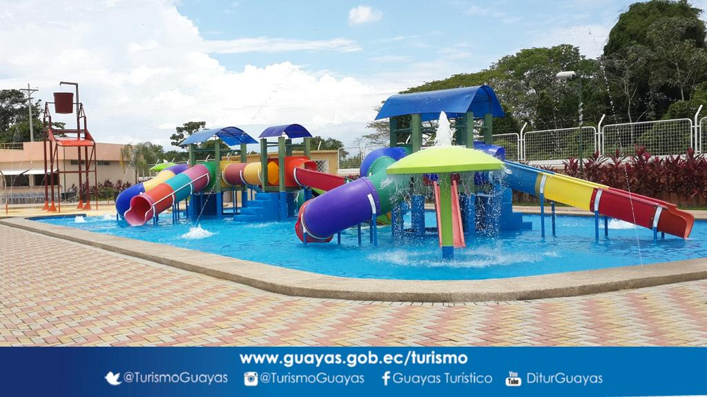

El Parque Acuático Balao tiene una capacidad para 2000 visitantes. Cuenta con piscina de olas, toboganes y se ha convertido en la principal atracción para pasar el carnaval.Es un juego de diversion para niños y adultos, se encuentra ubicado en la cdla Julio Loaiza
El horario de atencion para los clientes es el siguiente:
| DIAS | HORARIO | |
|---|---|---|
| LUNES, MIERCOLES Y VIERNES | 13:00 PM - 15:00 PM | |
| MARTES Y JUEVES | 12:00 PM - 15:00 PM | |
| SABADOS Y DOMINGOS | 10:00 AM - 18:00 PM |
Menu del Bar
El bar de este atractivo turistico es muy variado, ademas de convencer a visitantes de cantones vecinos asi tambien se ha dado el gusto de deleitar a personas que residen fuera de esta provincia
Como platos a la carta podemos deleitar de:
Luego tenemos los pikeos como son:
El calendario de festividades puede variar a lo que son dias de feriados pero los dias fijos en festividades son:
--------------------------------------------------------- BALAO TOUR -----------------------------------------------------
VER MAS EN:
https://guayas.gob.ec/cantones-2/balao/CONTACTANOS EN:
Facebook:
https://www.facebook.com/alcaldiaciudadanadebalaoUbicanos en:
https://maps.app.goo.gl/vx716a1PSHRRGGQJ6